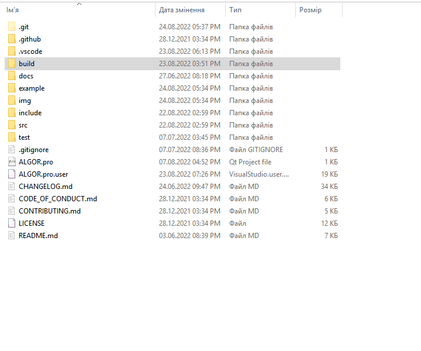
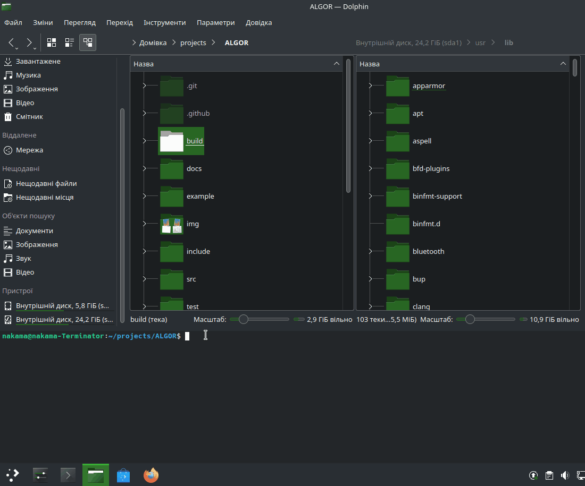
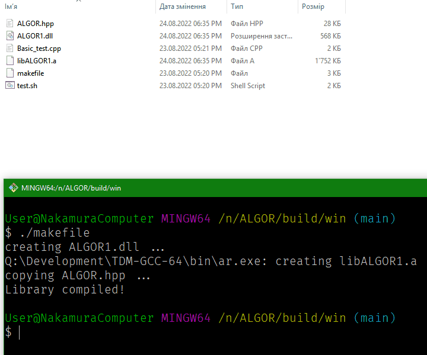

|
ALGOR 1.0.0.0
Бібліотека для обробки та сортування структур даних
|
|


| |
|
ALGOR 1.0.0.0
Бібліотека для обробки та сортування структур даних
|
|
|
| |
Бібліотека для обробки та сортування структур даних.
У пошуках алгоритмів сортувань та пояснень у вигляді коду я часто зустрічав великі коди з купою непотрібних речей, не пов'язаних з алгоритмом сортування (наприклад, тестування) і, в принципі, код містив змінні не зі звичайними іменами, а з назвами типу A, B, C - стиль коду порушений (а іноді навіть жахливий), іноді можна виявити збиту табуляцію та є купа інших факторів, які роблять код нечитабельним і недоступним для розуміння. Я витратив багато часу, щоб зрозуміти ці алгоритми і написав цю бібліотеку, по-перше, щоб не писати щоразу одне і те ж, а просто підключити бібліотеку і використовувати готовий код, а по-друге для інших людей, які тільки навчаються алгоритмам, щоб можна було легко розібратися: код містить лише необхідні методи, вони розташовані по порядку, код я намагаюся оптимізувати, стиль не порушений, і головне - завдяки нормальним іменам код зрозуміліший, читабельніший і підходить для навчання алгоритмам.
Copyright © 2021-2022 Kalynovsky Valentin. All rights reserved.
Licensed under the Apache License, Version 2.0 (the "License"); you may not use this file except in compliance with the License. You may obtain a copy of the License at
http://www.apache.org/licenses/LICENSE-2.0
Unless required by applicable law or agreed to in writing, software distributed under the License is distributed on an "AS IS" BASIS, WITHOUT WARRANTIES OR CONDITIONS OF ANY KIND, either express or implied. See the License for the specific language governing permissions and limitations under the License.
Бібліотека реалізує наступний функціонал:
Бібліотека призначена для компіляції та динамічного лінкування. У релізі доступна зібрана Windows-версія бібліотеки. Можна завантажити та розпакувати архів і:
Оголошення хідеру відбувається наступним чином:
Сніппет:
Можна бібліотеку зібрати власноруч. Як її зібрати та використовувати описано далі.
Бібліотека була написана на чистому С++ у IDE Qt, тому достатньо відкрити .pro-файл у IDE, підключити Kit і зібрати бібліотеку. Тоді створюється окрема директорія з потрібними файлами ALGOR1.dll та libALGOR1.a.
Компіляція через IDE Qt на Linux не здійснювалась, а тому автор не може дати порад, як зібрати бібліотеку...
Збирати бібліотеку бажано у консолі GitBush (потрібно встановити), так як інструкції даються саме для неї. З директорії бібліотеки потрібно перейти до build/win/ і там запустити файл командою
Надалі при зборках програм потрібно просто додавати ці (зібрані) файли бібліотеки до програм, що їх використовують:

З директорії бібліотеки потрібно перейти до build/linux/ і запустити програму make
Бібліотека встановлюється в систему, а тому її можна видалити

У відповідній директорії (build/win/ чи build/linux/) у консолі (на Windows це все той же GitBush) запускаємо файл test.sh
Також у цьому файлі показано команду компіляції з лінковкою бібліотеки.

Всі алгоритми перевірені мною, але якщо у вас виникли проблеми з використанням бібліотеки, код не працює, є пропозиції щодо оптимізації або поради щодо покращення стилю коду та імен - запрошую сюди та сюди.
|